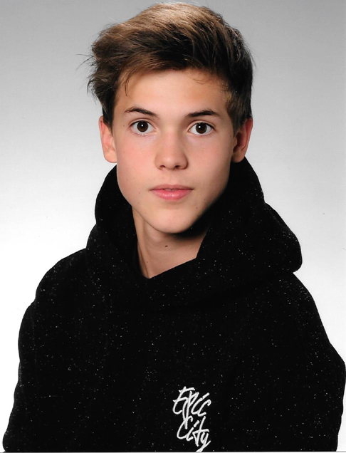

Hello I am,

Jakob Lehner!
I am 15 years old and in the moment attending to the HTBLA Leonding.
In my free time i do a lot of sports, play video games or listen to music.
I am orderly and like it when things are structured,
therefore I use a lot of helpful tools in my daily life.
That is the reason why Martin and I came up with the idea to create our own personal organizer.
But you can find more about that in idea.
If you want to contact me, use the links below.


Servus, I am
Martin Hausleitner!
I just turned 17.
I go like Jakob to the HTL Leonding where I also helped to create this website.
In my spare time I play with my friends over Discord a lot of computer games like Rainbow Six Siege or Overwatch.
Because I can not only play games all day but also have to organize myself for school, I and Jakob have chosen the topic To-do-list comparison.
In this way we were able to find the best managers and get involved and share our experience with others.
Pls follow me on Instagram i need more clicks!